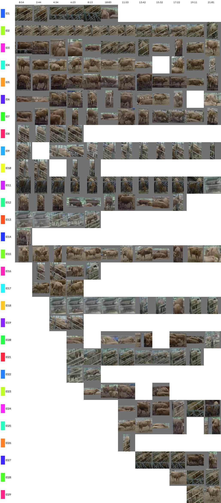
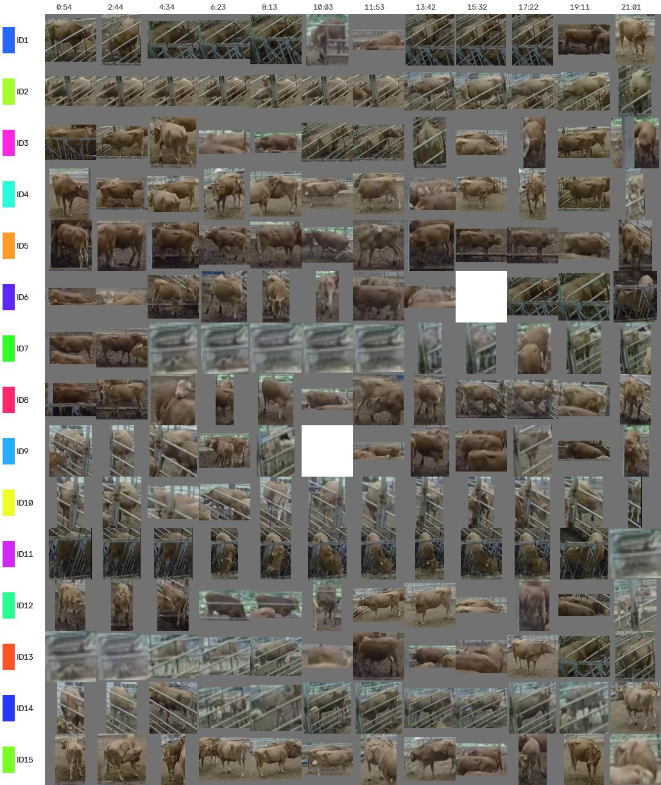

ReID Training and Fixed-Herd ID Keeping
The stitching in Lesson 07 is good at joining cattle that were “briefly lost”, but when cattle repeatedly gather and disperse, as in the 22-minute cow03, 29 IDs remained (for about 15 actual animals). This lesson adds two things: ① a re-identification (ReID) model that tells individual animals apart by appearance, trained without human labels, and ② the constraint that “the number of animals in the pen is fixed”, used to assign every tracklet to exactly N individuals.
YOLO detection → BoT-SORT tracking → first stitching pass (short breaks, Lesson 07)
→ ReID embedding extraction (every 4 frames, cattle crop → 256-dim vector)
→ ① ID swap splitting : cut a tracklet if its appearance changes right after overlapping another animal
→ ② herd size N estimate : number of simultaneous detections
→ ③ fixed N-slot assignment: no time overlap + appearance + motion cost, greedy assignment from the longest tracklets → iterative refinement (ICM)
→ IDs 1..N1. ReID training data: the tracking output is the label
Even without people naming each animal, the tracking output contains two reliable pieces of information.
- Crops within the same tracklet → the same animal (positive)
- Other tracklets on screen at the same moment → definitely different animals (negative). After all, one animal can't be in two places at once.
For short videos (1–2 min), the number of IDs after stitching is nearly the herd size, so we use the final IDs as labels; for the long video (cow03), we use the pre-stitching tracklets as labels. Because the same animal may be split across several tracklets, for the long video we put only tracklets that coexist at some time t into one batch. Also, so that the same animal from another video never shows up as a negative, each batch is drawn from a single video.
Only clean crops are used: confidence ≥ 0.5, interpolated frames excluded, IoU with other cattle < 0.15, height ≥ 24px. The result is about 24,000 images from 10 videos.

"""Build ReID training data: collect cow crops using tracking results as 'self-supervised labels'.
Labelling principle (no human labelling)
- crops within the same tracklet (or linked ID) → same cow (positive)
- different tracklets present at the same time → necessarily different cows (negative)
mode "id" : short videos → final IDs of the offline linking result (tracks_activity.csv) as labels
mode "tracklet" : long videos → pre-linking tracklets (tracks_raw.csv) as labels (one cow may span several tracklets, so
training compares only tracklets that coexist in time)
Clean crops only: conf ≥ 0.5, no interpolated frames, IoU < 0.15 with other cows (no overlap), height ≥ 24px
Usage: python scripts/prepare_reid.py E:/Video/cow
Output: data/reid/<video>.npz (imgs uint8 N×128×128×3, label, frame, mode)
"""
import argparse
import sys
from pathlib import Path
import cv2
import numpy as np
import pandas as pd
sys.path.insert(0, str(Path(__file__).resolve().parent.parent))
from hanwoo.config import DATA_DIR, OUTPUT_DIR # noqa: E402
from hanwoo.reid import CROP, crop_box, max_iou_others # noqa: E402
def load_labels(name: str, long_video: bool, min_tracklet_s: float, fps: float):
if long_video:
df = pd.read_csv(OUTPUT_DIR / name / "tracks_raw.csv")
n = df.groupby("tid").frame.transform("count")
df = df[n >= min_tracklet_s * fps].copy()
mode = "tracklet"
else:
df = pd.read_csv(OUTPUT_DIR / name / "tracks_activity.csv")
df = df[df.interp == 0].copy()
mode = "id"
return df[["frame", "tid", "x1", "y1", "x2", "y2", "conf"]].reset_index(drop=True), mode
def main():
ap = argparse.ArgumentParser()
ap.add_argument("videos", help="video folder")
ap.add_argument("--out", default=str(DATA_DIR / "reid"))
ap.add_argument("--long-s", type=float, default=300, help="use tracklet mode for videos at least this long (s)")
ap.add_argument("--crops-per-s", type=float, default=4, help="crops per second per ID (short videos)")
a = ap.parse_args()
out = Path(a.out)
out.mkdir(parents=True, exist_ok=True)
for vp in sorted(Path(a.videos).glob("*.mp4")):
name = vp.stem
cap = cv2.VideoCapture(str(vp))
fps = cap.get(cv2.CAP_PROP_FPS) or 24.0
dur = cap.get(cv2.CAP_PROP_FRAME_COUNT) / fps
long_video = dur >= a.long_s
df, mode = load_labels(name, long_video, 5.0, fps)
# long videos: 1 crop per second; short videos: crops_per_s
every = int(round(fps)) if long_video else max(1, int(round(fps / a.crops_per_s)))
if dur > 100 and not long_video:
every *= 2
df = df[df.frame % every == 0].reset_index(drop=True)
df["occ"] = max_iou_others(df)
df = df[(df.conf >= 0.5) & (df.occ < 0.15) & ((df.y2 - df.y1) >= 24)].reset_index(drop=True)
by_frame = df.groupby("frame").indices
imgs = np.zeros((len(df), CROP, CROP, 3), np.uint8)
last = df.frame.max()
fi = 0
while fi <= last:
if fi in by_frame:
ok, frame = cap.read()
if not ok:
break
for i in by_frame[fi]:
r = df.iloc[i]
imgs[i] = crop_box(frame, (r.x1, r.y1, r.x2, r.y2))
elif not cap.grab():
break
fi += 1
cap.release()
np.savez(out / f"{name}.npz", imgs=imgs, label=df.tid.to_numpy(np.int32),
frame=df.frame.to_numpy(np.int32), mode=mode, fps=fps)
print(f"{name}: {mode:8s} every {every:2d}f crops {len(df):6d} ids {df.tid.nunique()}")
# preview grid (for the course): 6 crops per ID
S = np.load(out / "cow04.npz")
rows = []
for lab in np.unique(S["label"])[:8]:
idx = np.where(S["label"] == lab)[0]
pick = idx[np.linspace(0, len(idx) - 1, 8).astype(int)]
rows.append(np.hstack([S["imgs"][i] for i in pick]))
cv2.imwrite(str(out / "preview_cow04.jpg"), np.vstack(rows))
if __name__ == "__main__":
main()2. Model and loss functions
- Backbone: ImageNet-pretrained ResNet50 with the last stride changed to 1, keeping an 8×8 feature map even for small cattle crops (128px)
- Head: GAP → BatchNorm → Linear(256) → L2 normalization → compared by cosine similarity
- Batches: P×K sampling (P=12 animals × K=4 images)
- Loss: Supervised Contrastive (temperature 0.1) + batch-hard triplet (margin 0.3)
- Augmentation: horizontal flip, mild scaling and translation, brightness and contrast, random erasing (simulating fence occlusion). We do not change hue, because coat shade is a cue for telling individuals apart.
"""Hanwoo re-identification (ReID) model: cow crop → 256-d L2-normalised embedding.
- Backbone: ImageNet-pretrained ResNet50 with last stride 1 (keeps spatial resolution for small cow crops)
- Head: GAP → BN → Linear(256) → L2 normalisation
- Training: scripts/train_reid.py (tracking results used as self-supervised labels, Supervised-Contrastive loss)
"""
from __future__ import annotations
from pathlib import Path
import cv2
import numpy as np
import pandas as pd
import torch
import torch.nn as nn
import torch.nn.functional as F
CROP = 128 # input size (square letterbox)
MEAN = np.array([0.485, 0.456, 0.406], np.float32)
STD = np.array([0.229, 0.224, 0.225], np.float32)
class CowReID(nn.Module):
def __init__(self, dim: int = 256, pretrained: bool = True):
super().__init__()
import torchvision
w = torchvision.models.ResNet50_Weights.IMAGENET1K_V2 if pretrained else None
r = torchvision.models.resnet50(weights=w)
# last stride 1 (BoT trick): 4x4 → 8x8 feature map at 128px input
r.layer4[0].conv2.stride = (1, 1)
r.layer4[0].downsample[0].stride = (1, 1)
self.backbone = nn.Sequential(*list(r.children())[:-2])
self.bn = nn.BatchNorm1d(2048)
self.fc = nn.Linear(2048, dim)
def forward(self, x):
f = self.backbone(x)
f = F.adaptive_avg_pool2d(f, 1).flatten(1)
return F.normalize(self.fc(self.bn(f)), dim=1)
# --------------------------------------------------------------------------- crop
def crop_box(frame: np.ndarray, box, size: int = CROP, pad: float = 0.08) -> np.ndarray:
"""Crop the bbox slightly enlarged and place it, aspect ratio kept, on a size×size grey canvas (letterbox)."""
H, W = frame.shape[:2]
x1, y1, x2, y2 = box
w, h = x2 - x1, y2 - y1
x1, x2 = int(max(0, x1 - pad * w)), int(min(W, x2 + pad * w))
y1, y2 = int(max(0, y1 - pad * h)), int(min(H, y2 + pad * h))# --------------------------------------------------------------------------- data
class Video:
def __init__(self, path: Path):
z = np.load(path)
self.name = path.stem
self.imgs, self.label, self.frame = z["imgs"], z["label"], z["frame"]
self.mode = str(z["mode"])
self.ids = np.unique(self.label)
self.idx = {l: np.where(self.label == l)[0] for l in self.ids}
self.ids = np.array([l for l in self.ids if len(self.idx[l]) >= 4])
self.span = {l: (self.frame[self.idx[l]].min(), self.frame[self.idx[l]].max()) for l in self.ids}
def sample(self, rng, P, K):
if self.mode == "tracklet":
t = rng.integers(self.frame.min(), self.frame.max() + 1)
alive = [l for l in self.ids if self.span[l][0] <= t <= self.span[l][1]]
cand = np.array(alive) if len(alive) >= 4 else self.ids
else:
cand = self.ids
ids = rng.choice(cand, size=min(P, len(cand)), replace=False)
sel, lab = [], []
for l in ids:
sel += list(rng.choice(self.idx[l], size=K, replace=len(self.idx[l]) < K))
lab += [l] * K
return self.imgs[sel], np.array(lab)
def augment(imgs: np.ndarray, rng) -> np.ndarray:
out = np.empty_like(imgs)
for i, im in enumerate(imgs):
if rng.random() < 0.5:
im = im[:, ::-1]
# mild scale / shift
s = rng.uniform(0.85, 1.1)
tx, ty = rng.uniform(-0.08, 0.08, 2) * CROP
M = np.array([[s, 0, (1 - s) * CROP / 2 + tx], [0, s, (1 - s) * CROP / 2 + ty]], np.float32)
im = cv2.warpAffine(np.ascontiguousarray(im), M, (CROP, CROP), borderValue=(114, 114, 114))
# brightness / contrast (hue is an identity cue, so it is left unchanged)
a, b = rng.uniform(0.75, 1.25), rng.uniform(-20, 20)
im = np.clip(im.astype(np.float32) * a + b, 0, 255).astype(np.uint8)
# random erasing: simulates occlusion by fences / other cows
if rng.random() < 0.5:
eh, ew = int(CROP * rng.uniform(0.15, 0.4)), int(CROP * rng.uniform(0.15, 0.4))
y, x = rng.integers(0, CROP - eh), rng.integers(0, CROP - ew)
im[y:y + eh, x:x + ew] = rng.integers(0, 255, 3)
out[i] = im
return out
# --------------------------------------------------------------------------- loss
def supcon(z, y, temp=0.1):
sim = z @ z.T / temp
n = len(y)
eye = torch.eye(n, device=z.device, dtype=torch.bool)
sim = sim.masked_fill(eye, -1e4)
pos = (y[:, None] == y[None, :]) & ~eye
logp = sim - torch.logsumexp(sim, dim=1, keepdim=True)
return -(logp * pos).sum(1).div(pos.sum(1).clamp(min=1)).mean()
def triplet_hard(z, y, margin=0.3):
d = torch.cdist(z, z)
same = y[:, None] == y[None, :]
hp = (d * same).max(1).values
hn = d.masked_fill(same, 1e4).min(1).values
return F.relu(hp - hn + margin).mean()
3. Training and evaluation
python scripts/prepare_reid.py E:/Video/cow
python scripts/train_reid.py --iters 3000 # cow02 and cow09 are held out for validationEvaluation method: in each validation video, the mean embedding of each animal's first half forms the gallery, and for every 2-second segment of the second half we measure the fraction correctly identified as “which of the 10–12 animals in the same video is this?” (Rank-1).
| Appearance feature | cow02 (12 animals) | cow09 (10 animals) |
|---|---|---|
| HSV color histogram (Lesson 07) | 0.605 | 0.575 |
| ImageNet ResNet50 (no training) | 0.617 | 0.625 |
| ReID v1 — learning rate 3e-4 for everything | 0.574 | 0.783 |
| ReID v2 — backbone 5e-5 / head 1e-3 (adopted) | 0.637 | 0.783 |
4. Fixed-herd ID assignment algorithm
① ID swap splitting
Online trackers sometimes swap IDs when two animals overlap (an ID switch). At every moment of overlap with another animal (IoU ≥ 0.2), we compare the mean embeddings of the 4 seconds before and the 4 seconds after, and if the cosine similarity is below 0.55 we cut the tracklet at that point.
| Calibration result for threshold 0.55 | cow02 | cow09 |
|---|---|---|
| Rate of wrongly cutting consecutive 4 s segments of the same animal | 0.0% | 1.0% |
| Rate of catching segments where the animal changed | 81% | 99% |
② Estimating herd size N
The largest N such that frames with at least N simultaneous detections of confidence ≥ 0.4 make up at least 1% of all frames. For cow03 it is 15. If you know the herd size, specify it with --herd-size 15.
③ Assigning to N slots (constrained clustering)
- Constraint: one animal cannot be in two places at the same time → tracklets overlapping in time by more than 0.5 s cannot share a slot
- Motion gate: not allowed if the distance from the end of the slot's previous tracklet to the start of the new tracklet exceeds
(2 + 0.5×gap seconds) × 1.5body lengths - Cost = 0.7 × appearance distance (1 − cosine; against temporally neighboring tracklets and the slot's overall mean) + 0.3 × motion cost + 0.05 × gap cost
- Greedy assignment: starting from the longest (= most reliable) tracklets, put each into the cheapest slot. If no slot fits, or the cost is worse than 0.45 and there are fewer than N slots, open a new slot
- Iterative refinement (ICM): starting from the shortest tracklets, remove each one and move it to the best slot “with all other assignments fixed”; repeat until nothing changes
- Tracklets that fit into none of the N slots (simultaneous detections exceeding N: two boxes on one animal, false positives) are excluded and their share is reported (cow03: 3% of detections)
"""Stage 3 (fixed herd): keep IDs stable using the constraint that the barn holds a fixed number N of cows.
Tracklets left after online tracking + short-gap linking are assigned to exactly N 'animal slots'.
Constraint: one animal cannot be in two places at once → tracklets overlapping in time cannot share an ID
Cost : appearance (ReID embedding cosine distance) + motion (is the distance reachable from the previous/next position within the gap?)
Procedure :
1) ID-swap splitting - cut a tracklet where its appearance embedding changes abruptly right after overlapping another cow
2) Herd-size estimate - the largest N such that >= 1% of frames have N or more simultaneous detections (or user-specified)
3) Greedy assignment - longest (most reliable) tracklets first, into the lowest-cost slot with no time overlap
(if it fits no slot and slots < N, it starts a new animal)
4) Iterative refinement (ICM) - remove tracklets one at a time, shortest first, and reassign each to the best slot given the rest, until convergence
Tracklets that fit none of the N slots (more than N simultaneous detections: duplicate boxes / false positives) are dropped and their share is reported.
"""
from __future__ import annotations
import numpy as np
import pandas as pd
from .config import PipelineConfig
from .stitching import body_px
# --------------------------------------------------------------------------- embedding attachment
def attach_embeddings(df: pd.DataFrame, emb_df: pd.DataFrame, emb: np.ndarray):
"""Attach a ReID embedding time series to each tracklet of df(frame, tid, rtid).
emb_df: frame, tid (= original tracker id), conf, occ / emb: embeddings in the same order
Returns: {tid: dict(frame, emb, w)} (w = quality weight: 0 for heavily overlapped crops)
"""
e = emb_df.rename(columns={"tid": "rtid"}).reset_index().rename(columns={"index": "row"})
m = df[["frame", "rtid", "tid"]].merge(e, on=["frame", "rtid"], how="inner")
out = {}
for tid, g in m.groupby("tid"):
g = g.sort_values("frame")
w = np.where(g.occ.to_numpy() < 0.3, g.conf.to_numpy(), 0.0)
out[tid] = dict(frame=g.frame.to_numpy(), emb=emb[g.row.to_numpy()], w=w, occ=g.occ.to_numpy())
return out
def _mean_emb(E, w=None):
if len(E) == 0:
return None
w = np.ones(len(E)) if w is None else w
if w.sum() <= 0:
w = np.ones(len(E))
v = (E * w[:, None]).sum(0)
n = np.linalg.norm(v)
return v / n if n > 0 else None
# --------------------------------------------------------------------------- 1) swap splitting
def split_swaps(df: pd.DataFrame, embs: dict, fps: float, cfg: PipelineConfig):
"""Split a tracklet when the mean embeddings in the window seconds before/after an overlap with another cow (occ>=0.2) differ."""
W = int(cfg.split_window_s * fps)
df = df.copy()
next_id = int(df.tid.max()) + 1
log = []
queue = list(embs)
while queue:
tid = queue.pop()
d = embs.get(tid)
if d is None or len(d["frame"]) < 8:
continue
fr, E, w, occ = d["frame"], d["emb"], d["w"], d["occ"]
best, best_sim = None, 1.0
for i in np.where(occ >= 0.2)[0]:
t = fr[i]
b = (fr >= t - W) & (fr < t) & (w > 0)
a = (fr > t) & (fr <= t + W) & (w > 0)
if b.sum() < 3 or a.sum() < 3 or t - fr[0] < W // 2 or fr[-1] - t < W // 2:
continue
sim = float(_mean_emb(E[b], w[b]) @ _mean_emb(E[a], w[a]))
if sim < best_sim:
best, best_sim = t, sim
if best is None or best_sim >= cfg.split_sim_thr:
continue
# split: assign a new id to frames after best
m = (df.tid == tid) & (df.frame > best)
df.loc[m, "tid"] = next_id
k = fr > best
embs[next_id] = {key: v[k] for key, v in d.items()}
embs[tid] = {key: v[~k] for key, v in d.items()}
log.append(dict(tid=int(tid), new=next_id, frame=int(best), sim=round(best_sim, 3)))
queue += [tid, next_id]
next_id += 1
return df, embs, log
# --------------------------------------------------------------------------- 2) herd-size estimate
def estimate_herd_size(raw: pd.DataFrame, n_frames: int, min_frac: float = 0.01, conf: float = 0.4) -> int:
cnt = raw[raw.conf >= conf].groupby("frame").size().reindex(range(n_frames), fill_value=0).to_numpy()
for k in range(int(cnt.max()), 0, -1):
if (cnt >= k).mean() >= min_frac:
return k
return int(cnt.max())
# --------------------------------------------------------------------------- 3,4) assignment
class _Slot:
def __init__(self):
self.members: list[int] = []
def intervals(self, T, exclude=None):
return [(T[m]["start"], T[m]["end"], m) for m in self.members if m != exclude]
def _summaries(df, embs):
T = {}
for tid, g in df.groupby("tid"):
g = g.sort_values("frame")
cx = ((g.x1 + g.x2) / 2).to_numpy(); cy = ((g.y1 + g.y2) / 2).to_numpy()
k = min(5, len(g))
d = embs.get(tid)
e = _mean_emb(d["emb"], d["w"]) if d is not None and len(d["frame"]) else None
T[tid] = dict(start=int(g.frame.iloc[0]), end=int(g.frame.iloc[-1]), n=len(g),
p_start=np.array([np.median(cx[:k]), np.median(cy[:k])]),
p_end=np.array([np.median(cx[-k:]), np.median(cy[-k:])]),
emb=e, n_emb=0 if d is None else int((d["w"] > 0).sum()))
return T
def _slot_proto(slot, T, exclude=None):
es = [(T[m]["emb"], max(T[m]["n_emb"], 1)) for m in slot.members if m != exclude and T[m]["emb"] is not None]
if not es:
return None
return _mean_emb(np.stack([e for e, _ in es]), np.array([n for _, n in es], float))
def _cost(t, slot, T, fps, persp, cfg, tol, exclude=None):
"""Cost of putting tracklet t into slot. None if impossible."""
s = T[t]
prev = nxt = None
for a, b, m in slot.intervals(T, exclude):
if a <= s["end"] - tol and b >= s["start"] + tol: # overlaps in time → impossible
return None
if b < s["start"] + tol and (prev is None or b > T[prev]["end"]):
prev = m
if a > s["end"] - tol and (nxt is None or a < T[nxt]["start"]):
nxt = m
# motion cost: previous end → t start, t end → next start
c_mot, n_mot, gaps = 0.0, 0, []
for p, q in ((prev, t), (t, nxt)):
if p is None or q is None:
continue
gap_s = max(T[q]["start"] - T[p]["end"], 0) / fps
pa, pb = T[p]["p_end"], T[q]["p_start"]
d_bl = np.linalg.norm(pa - pb) / body_px((pa[1] + pb[1]) / 2, persp)
allowed = cfg.id_radius_bl + cfg.id_speed_bl_s * gap_s
if d_bl > cfg.id_gate * allowed:
return None
c_mot += min(d_bl / allowed, cfg.id_gate); n_mot += 1
gaps.append(gap_s)
c_mot = c_mot / n_mot if n_mot else 0.5
# appearance cost: temporally neighbouring tracklets (local) + slot-wide mean (global)
if s["emb"] is None:
c_app = 0.5
else:
loc = [T[m]["emb"] for m in (prev, nxt) if m is not None and T[m]["emb"] is not None]
glob = _slot_proto(slot, T, exclude=t if exclude is None else exclude)
sims = []
if loc:
sims.append(max(float(s["emb"] @ e) for e in loc))
if glob is not None:
sims.append(float(s["emb"] @ glob))
c_app = 1 - np.mean(sims) if sims else 0.5
c_gap = min(min(gaps) / 600, 1) if gaps else 0.5
return cfg.id_app_weight * c_app + (1 - cfg.id_app_weight) * c_mot + 0.05 * c_gap
def assign_identities(df: pd.DataFrame, embs: dict, fps: float, persp, n_herd: int, cfg: PipelineConfig):
T = _summaries(df, embs)
tol = int(cfg.id_overlap_tol_s * fps)
order = sorted(T, key=lambda t: -T[t]["n"])
slots: list[_Slot] = []
where: dict[int, int] = {}
def best_slot(t, exclude=None):
best, bc = None, np.inf
for k, sl in enumerate(slots):
c = _cost(t, sl, T, fps, persp, cfg, tol, exclude)
if c is not None and c < bc:
best, bc = k, c
return best, bc
# 3) greedy assignment (longest tracklets first)
for t in order:
k, c = best_slot(t)
if k is not None and (c < cfg.id_new_cost or len(slots) >= n_herd):
slots[k].members.append(t); where[t] = k
elif len(slots) < n_herd:
slots.append(_Slot()); slots[-1].members.append(t); where[t] = len(slots) - 1
# else: unassigned (more than N simultaneous detections)
# 4) ICM refinement (reassign, shortest tracklets first)
moves_log = []
for it in range(cfg.id_refine_iters):
moves = 0
for t in sorted(T, key=lambda t: T[t]["n"]):
cur = where.get(t)
if cur is not None:
slots[cur].members.remove(t)
k, c = best_slot(t)
if k is None:
if cur is not None: # back to its original slot
slots[cur].members.append(t)
continue
slots[k].members.append(t); where[t] = k
if k != cur:
moves += 1
moves_log.append(moves)
if moves == 0:
break
# result: tid → animal slot number
out = df[df.tid.isin(where)].copy()
out["tid"] = out.tid.map(lambda t: where[t] + 1000) # renumbered to 1..N in the relabel step
# overlapping frames within tolerance (tol) → keep only the more confident one
out = out.sort_values("conf", ascending=False).drop_duplicates(["frame", "tid"]).sort_values(["frame", "tid"])
n_un = int(df.tid.isin(set(T) - set(where)).sum())
stats = dict(herd_size=int(n_herd), slots=len(slots), tracklets=len(T), unassigned_tracklets=len(T) - len(where),
unassigned_det_ratio=round(n_un / max(len(df), 1), 4), icm_moves=moves_log)
return out.reset_index(drop=True), stats, {int(t): int(k) for t, k in where.items()} # ---- Detection zones (remove false positives outside the barn / blurry background, hanwoo/zones.py) ----
zones_file: str = "" # empty = configs/zones/<video name>.json → default.json automatically
min_size_ratio: float = 0.0 # lower bound of box height / expected cow height (0 = off)
# ---- Fixed-herd ID assignment (ReID + herd-size constraint) ----
reid_weights: str = str(MODELS_DIR / "hanwoo_reid.pt") # if missing, only the two-stage linking is used
use_identity: bool = True
herd_size: int = 0 # herd size N (0 = estimate from simultaneous detections)
reid_every: int = 4 # ReID embedding interval (frames)
split_window_s: float = 4.0 # swap check: comparison window before/after an overlap (s)
split_sim_thr: float = 0.55 # split if cosine similarity of before/after mean embeddings is below this
id_radius_bl: float = 2.0 # motion gate: base radius (body lengths)
id_speed_bl_s: float = 0.5 # motion gate: extra allowed distance per second of gap (body lengths)
id_gate: float = 1.5 # no assignment beyond allowed distance × gate5. cow03 results: 29 → 15 IDs
ID contact sheet: each row is one ID, and the columns are time points dividing the whole video into 12 segments. If a row shows the same animal from start to finish, the ID was kept; empty cells are segments where that ID was not visible.


6. Usage
# if a ReID model (models/hanwoo_reid.pt) exists, fixed-herd assignment is used automatically
python run_activity.py E:/Video/cow/cow03.mp4
python run_activity.py E:/Video/cow --reuse --herd-size 15 # set herd size, reuse detection/embedding cache
python scripts/identity_sheet.py outputs/cow03 # generate the ID contact sheet